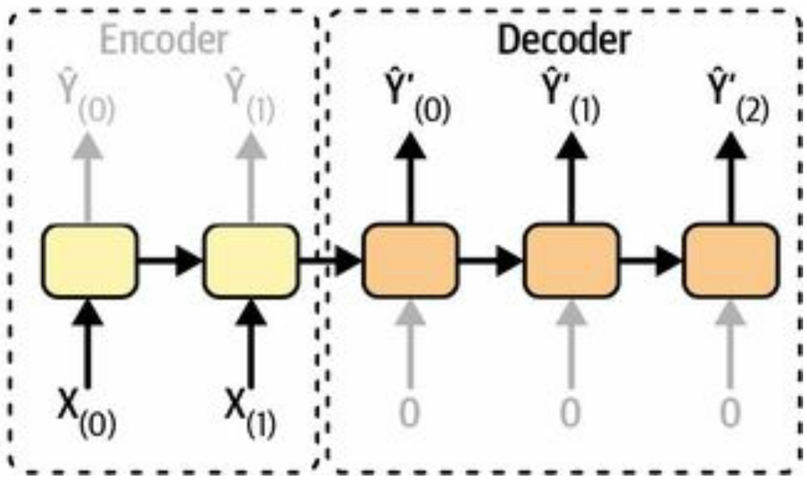
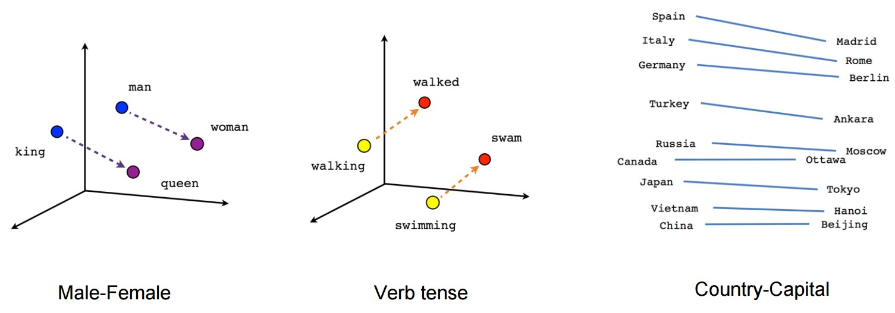

Evaluating semantic textual similarity is generally a difficult thing
For this, and other NLP model performance measurements, we rely on benchmark tasks:
Various classification / clustering / information retrieval problems with human annotated solutions.
sentences1 = ["The new movie is awesome","The cat sits outside","A man is playing guitar",]sentences2 = ["The dog plays in the garden","The new movie is so great","A woman watches TV",]# Compute embeddings for both listsembeddings1 = model.encode(sentences1)embeddings2 = model.encode(sentences2)# Compute cosine similaritiessimilarities = model.similarity( embeddings1, embeddings2)
The new movie is awesome
- The dog plays in the garden : 0.0543
- The new movie is so great : 0.8939
- A woman watches TV : -0.0502
Contextualised word embeddings
After training, embedding layers are static – a given token is always mapped to the same embedding vector.
However, a single token can have multiple meanings:
You are right about this
Make a right turn at the intersection
Our model can infer the correct meaning from context, as long as we treat the input as a sequence.

Embedding quality: MTEB etc
Sentence embeddings
Image embeddings
Text generation metrics
BLEU etc
Multi-gpu training
Natural language processing (NLP)
(as opposed to machine language)
Since most human knowledge is stored as text, NLP is an important field of study
Knowing grammar, syntax and language structure (i.e. linguistics), can we write down the set of rules required to do a language task like translation?
Not really, no.
Knowing basically nothing, but having a library of example text, can we statistically infer the rules required to do a language task?
Yes!
Disclaimer: There’s loads of interesting NLP stuff that we will skip, because it has been obsoleted by transformer models. Look at the supplemental reading on Canvas.
NLP tasks
Text classification:
What is the topic of this text?
Content filtering:
Is this email spam? Does this post contain swearing?
Sentiment analysis:
Is this review positive or negative?
Translation:
What is this text in French?
Summarisation:
Can you give a short summary of this article?
Plan
This week:
Basics of natural language processing
Preprocessing: - Text vectorisation - Tokenisation
Next week:
Transformers and the attention mechanism
Our toolbox so far:
We know how to do
Sequence processing:
Know how to construct RNNs, CNNs
Input encoding:
Looked at embeddings last week
With this, we can build an NLP model at 2017 level (will do so this week)
Next week we will learn about
Transformers(not the electrical kind)
With this, we can build an NLP model at 2022 level
Text: I am shocked. Shocked and dismayed that the 428 of you IMDB usersEncoded: 10 238 2355 2355 3 1 12 2 1 5 23 933 5911Decoded: i am shocked shocked and [UNK] that the [UNK] of you imdb users
Can remove HTML tags (or other uninteresting stuff) by using regexes:
You run an online shop and want to compare customers.
User 1 bought 1x eggs, 1x flour and 1x sugar.
User 2 bought 100x eggs, 100x flour and 100x sugar.
User 3 bought 1x eggs, 1x Vodka and 1x Red Bull.
-> By cosine similarity, user 1 and user 2 are more similar
-> By Euclidian similarity, user 1 and user 3 are more similar
Word embeddings are affected by word frequency, so cosine similarity is often preferred.
Embeddings

Better text tokenisation
Some words are obviously variants of the same; but conjugated, in plural, etc.
am, is, are are all variants of the lemma that is be
We can collapse these in order to simplify the vocabulary our model needs to learn:
He is reading books->He be read book
Manually composed algorithms for this lemmatization have been developed over long time.
Better text tokenisation
Modern tokenisation algorithms are not inspired by linguistics, but rather substring frequencies in data.
Different LLMs use different algorithms, but they are mostly based on splitting words into individual characters and recombing them into common subwords.
The final vocabulary is under no obligation to make sense to us 🤷
Randomly selected tokens from the GPT-2 tokeniser vocabulary: